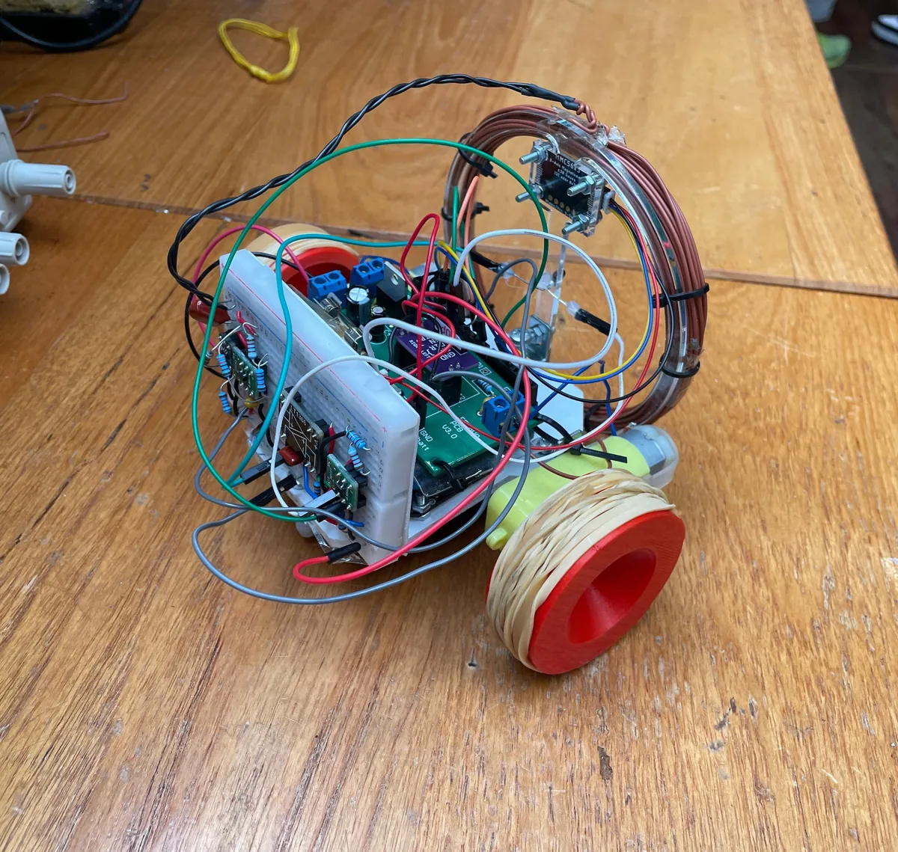

Projects
whatdidi - command line history search tool
A command-line tool that searches your shell history, with unique filtering, persistent settings and self-updating.
View detailsGranite block allocator
A desktop tool that packs granite blocks into containers, loading each one as close to its weight limit as possible.
View details
Custom 16-bit CPU with pipelining and interrupts
A 16-bit RISC-style CPU built up from logic gates, with a 2-stage pipeline, hardware interrupts and hand-written assembly programs.
View detailsCustom macOS/Linux setup script
A one-command script that turns a fresh macOS or Ubuntu/Debian machine into a ready-to-use development environment.
View detailsMulti-threaded game simulation in Java
A multi-threaded card game simulation with a custom cyclic barrier for thread synchronisation, fully unit tested.
View details
Fundamentals of machine learning
A logistic regression classifier for handwritten digits, exploring PCA, t-SNE and UMAP for dimensionality reduction.
View details
Web player vs AI battleships game
A web-based battleships game: place your ships interactively, then battle an AI opponent.
View details
Custom lift simulator
A lift simulator with a GUI and customisable parameters such as lift capacity and number of floors.
View details
Electrical engineering group design project
A remote-controlled rover that detects infrared, radio and magnetic signals, from circuit design to Arduino code.
View details
Why is software OS-specific?
A technical presentation on why applications get tied to one operating system, evaluating translation layers, containers and Electron as cross-platform solutions.
View details